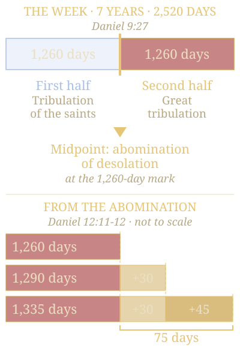

Prophecy & the covenants
Timeline of Days in Daniel 8 and 12
Total Period: 7 Years
✦ ✦ ✦Use the arrow keys or swipe to move. Tap any reference to read the verse.
I. Daniel 8:13-14
Vision of the Sanctuary Cleansing
Then I heard one saint speaking, and another saint said unto that certain saint which spake, How long shall be the vision concerning the daily sacrifice, and the transgression of desolation, to give both the sanctuary and the host to be trodden under foot? And he said unto me, Unto two thousand and three hundred days; then shall the sanctuary be cleansed.Daniel 8:13-14
2,300days · Daniel 8:14
II. Daniel 12:11-12
Specific Time Periods
And from the time that the daily sacrifice shall be taken away, and the abomination that maketh desolate set up, there shall be a thousand two hundred and ninety days. Blessed is he that waiteth, and cometh to the thousand three hundred and five and thirty days.Daniel 12:11-12
1,290days · Daniel 12:11
1,335days · Daniel 12:12
III. Total Period: 7 Years
Timeframe Breakdown
And he shall confirm the covenant with many for one week: and in the midst of the week he shall cause the sacrifice and the oblation to cease, and for the overspreading of abominations he shall make it desolate, even until the consummation, and that determined shall be poured upon the desolate.Daniel 9:27
- The “week” equals 7 prophetic years, calculated as 2,520 days (7 x 360-day prophetic years).
7prophetic years
2,520days
III. Timeframe Breakdown
The days laid side by side

Tribulation of the Saints, 1,260 Days
First Half: 3.5 Years
And he shall speak great words against the most High, and shall wear out the saints of the most High, and think to change times and laws: and they shall be given into his hand until a time and times and the dividing of time.Daniel 7:25
- This period of 1,260 days (3.5 x 360) represents the tribulation where the saints face persecution.
Midpoint: Abomination of Desolation
And he shall confirm the covenant with many for one week: and in the midst of the week he shall cause the sacrifice and the oblation to cease, and for the overspreading of abominations he shall make it desolate, even until the consummation, and that determined shall be poured upon the desolate.Daniel 9:27
- Occurs at the 1,260-day mark, splitting the 7 years.
Great Tribulation, 1,260 Days + 30 Days
Second Half: 3.5 Years
- Extends to 1,290 days:
And from the time that the daily sacrifice shall be taken away, and the abomination that maketh desolate set up, there shall be a thousand two hundred and ninety days.Daniel 12:11
- Extra 30 Days: The 1,290 days include the 1,260 days of the second half plus an additional 30 days, likely an intercalary month in the Jewish lunar calendar to align the 360-day prophetic years with the solar calendar, ensuring proper timing of events.
Great Tribulation Concludes
Additional 45 Days
Blessed is he that waiteth, and cometh to the thousand three hundred and five and thirty days.Daniel 12:12
- The 1,335 days extend 45 days beyond the 1,290 days (1,335 - 1,290 = 45).
30days (1,290 - 1,260)
45days (1,335 - 1,290)
75days
- Total 75 Days: The 30 days (1,290 - 1,260) plus 45 days (1,335 - 1,290) form a 75-day period of intensified great tribulation, overlapping the second half’s end, concluding key events.
Post-1,335 Days
Wrath of God: ~1,185 Days
The remaining time after the 1,335 days (approximately 1,185 days, calculated as 2,520 total days minus 1,260 tribulation days and 75 great tribulation days) aligns with the period of God’s wrath, following the conclusion of the great tribulation.
Prophecy & the covenants
Timeline of Days
Daniel 8 and 12
2,300Daniel 8:14
1,260Daniel 7:25
1,290Daniel 12:11
1,335Daniel 12:12
Post-Tribulation, Pre-Wrath Timeline ↗Daniel 11 ↗Daniel’s 70th Week (chart) ↗Conditional Covenants and Ezekiel’s Temple ↗OT Prophecy: God’s Grace in a Conditional Promise ↗Outline of the Covenants ↗
✦ ✦ ✦